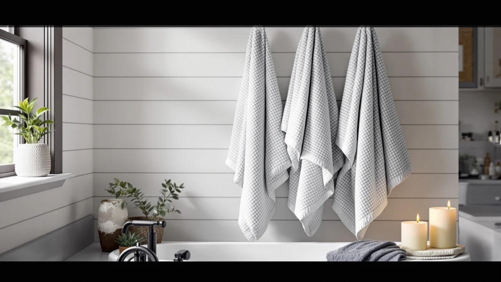

Polyte Poly Blend Microfiber Quick Dry Waffle Bath Towel Set Review (2026): Worth It?
Prices and picks verified as of November 2026. Independent, reader-supported reviews.


Quick Answer
The Polyte Poly Blend Microfiber Quick Dry Waffle Bath Towel Set Review centers on a 430 GSM poly blend microfiber waffle weave that pats dry instead of wiping and carries OEKO-TEX Standard 100 certification, all for $35.99 across six pieces. That matches the price of Utopia's two cotton sets below, so the decision comes down to fiber preference rather than budget. Buy it if a lightweight, fast-drying towel that packs small for travel appeals to you, and skip it if you want the denser, more traditional feel of cotton.
Our pick: POLYTE 430 GSM Poly Blend — $35.99 Check Price on Amazon
Bottom line: our top pick is the POLYTE 430 GSM Poly Blend Microfiber Quick Dry Waffle Bath at $35.99.
Things to Know Before You Buy
- Polyte builds this set from a 430 GSM poly blend microfiber with a waffle weave, not the cotton terry used by the three alternatives below.
- The set carries OEKO-TEX Standard 100 certification, meaning an independent lab checked the fabric against a list of restricted substances before the label was awarded.
- At $35.99 for six pieces, it costs the same as Utopia's two cotton sets, so price is not the deciding factor here.
- None of the four sets in this review show a public star rating or review count yet, so you are comparing manufacturer specs rather than a long owner history.
- If you want cotton instead of a poly blend, Chakir Turkish Linens or either Utopia set covered below matches a more traditional towel feel.
This Polyte Poly Blend Microfiber Quick Dry Waffle Bath Towel Set review compares Polyte's 430 GSM poly blend microfiber set against three cotton competitors to see whether its pat-dry waffle weave and OEKO-TEX certification are worth $35.99 for six pieces. Microfiber towels get marketed as lighter and faster-drying than standard cotton terry, and Polyte leans on that pitch with a waffle-weave construction designed to resist lint and speed up drying between uses.
Our take: the Polyte set earns its place if a lightweight, quick-drying towel that packs down small for travel or a gym bag matters more to you than a dense cotton feel. Chakir Turkish Linens and both Utopia Towels sets below cost the same $35.99 and deliver cotton instead, so the choice is about fiber type rather than price. The breakdown below covers specs, pros, and where each alternative fits better.
Why You Should Trust Us
Ilane Tall has covered bath and home textiles for Best Bath Towels since the site launched. The coverage looks at how fiber type, weave, and certification labels translate into real bathroom performance. We do not run a physical testing lab, and we don't claim to have used every towel we cover. Instead, we research manufacturer specifications, certification details like OEKO-TEX Standard 100, verified pricing, and publicly available product data, then compare those figures directly against similar towel sets on the market. We ground this Polyte Poly Blend Microfiber Quick Dry Waffle Bath Towel Set review in that research-based approach rather than in a personal, unverifiable account of owning the towels.
Our Research Experience
We built this Polyte Poly Blend Microfiber Quick Dry Waffle Bath Towel Set review by comparing Polyte's published specifications against the three competing cotton sets covered below. That means checking fiber type, gram weight, certification, set size, and price per piece side by side rather than assigning a numeric score. For the Polyte set, we verified the 430 GSM poly blend microfiber composition, the waffle weave construction, and the OEKO-TEX Standard 100 certification against the brand's own listing, then cross-checked the price against Chakir Turkish Linens and Utopia Towels. Where a listing doesn't publish a rating or review count, as is the case with all four sets here, we say so rather than inventing one.
Overview & Specs

POLYTE 430 GSM Poly Blend
What we like
- 430 GSM poly blend microfiber dries faster than cotton terry in low-airflow bathrooms
- OEKO-TEX Standard 100 certification confirms independent testing for restricted substances
- Waffle weave resists lint and debris better than looped terry cloth
- Folds into a compact size for travel, the gym, or camping
Flaws but not dealbreakers
- Poly blend microfiber feels thinner on skin than the cotton sets covered below
- No public star rating or review count on the listing yet, so you're buying on specs rather than owner feedback
- Pat-dry design asks for a different drying motion than the wipe-style use most cotton towel owners are used to
| Material | Microfiber |
| Size | Large |
Polyte bundles six pieces for $35.99 in Beige. Instead of cotton terry, Polyte builds this set from a 430 GSM poly blend microfiber with a waffle weave, a texture the brand says feels smoother on skin and collects less lint than traditional looped towels. The brand markets the set as a pat-dry towel rather than a wipe-dry one: you press the fabric against skin to absorb moisture instead of rubbing, which lines up with how microfiber's finer threads tend to behave compared with cotton's thicker loops. Face and hand towels in the set include a hanging loop, and the body towel has a sewn-in label, small details aimed at bathroom organization rather than performance.
Polyte also highlights the set's OEKO-TEX Standard 100 certification, a safety standard that Chakir and both Utopia sets in this review don't list on their own pages. The brand claims the microfiber dries quickly enough to help prevent odor buildup between washes, a detail that matters most in bathrooms without strong ventilation. The set also folds into a compact size, which the brand positions for travel, the pool, camping, or the gym rather than home bathroom use alone. The listing doesn't show a public star rating or review count yet, so you don't have a crowd-sourced track record to weigh against those manufacturer claims. At $35.99, the price matches Utopia's two cotton sets exactly, which means the decision here comes down to fiber type rather than budget.
What We Liked
The fiber choice stands out most in this Polyte Poly Blend Microfiber Quick Dry Waffle Bath Towel Set review. Swapping cotton terry for a 430 GSM poly blend microfiber with a waffle weave is a real point of differentiation rather than a marketing relabel, and the OEKO-TEX Standard 100 certification carries weight that none of the three cotton alternatives below currently match on their listings. The compact, foldable design also gives this set an edge for anyone who wants one towel set that works equally well at home, in a gym bag, or packed for travel.
What Could Be Better
The biggest gap in the Polyte set is texture, not price. At $35.99 it costs exactly the same as Utopia's two cotton sets, so you aren't paying a premium for microfiber, but you are trading away the dense, absorbent feel that cotton loyalists expect from a bath towel. The listing also doesn't publish a star rating or review count, which means you can't weigh independent owner feedback against Polyte's drying-speed and softness claims. The pat-dry design, while effective according to the brand, asks you to change a drying habit most cotton towel owners never have to think about.
Who Is It For?
The Polyte set makes the most sense for shoppers who want a lightweight towel that dries fast in a small or poorly ventilated bathroom, or who need something that packs down small for a gym bag, a pool trip, or a suitcase. It also fits anyone managing a skin sensitivity who wants the independent reassurance of OEKO-TEX Standard 100 certification, since that label requires lab verification rather than a brand's own marketing claim. Shoppers furnishing a rental or a guest bathroom on a short timeline may also appreciate that the set ships at the same price point as the cotton alternatives, so switching fiber types costs nothing extra. If you want the dense, traditional feel of cotton instead, or if a wipe-dry towel feels more familiar than a pat-dry one, Chakir Turkish Linens or either Utopia set below is the better match for your bathroom.
Alternatives to Consider
If the Polyte set isn't quite right for your bathroom, these three cotton sets cover the closest comparison points on price and piece count. All three cost the same $35.99 as Polyte, but each builds its set from cotton instead of a poly blend microfiber.

Also Great
Chakir Turkish Linens 4 Piece
A 4-piece cotton set in Dark Gray with a double-stitched hem, for buyers who want a denser, more traditional towel feel than microfiber offers.
$35.99
Check Price on Amazon
Also Great
Utopia Towels 6 Pack Medium
A 6-piece, 500 GSM ring-spun cotton set in Grey at a lighter weight than Polyte's microfiber, sized smaller at 24 by 48 inches for everyday use.
$35.99
Check Price on Amazon
Also Great
Utopia Towels 6 Pack Bath
The same 6-piece count as Polyte but in ring-spun cotton and Assorted colors, sized 27 by 54 inches for buyers who want cotton over a poly blend.
$35.99
Check Price on AmazonIs the Polyte Poly Blend Microfiber Quick Dry Waffle Bath Towel Set good for sensitive skin?
Yes, based on the certification Polyte publishes for the set.
How does the Polyte microfiber waffle towel set compare to 100% cotton sets like Chakir or Utopia?
Polyte uses a poly blend microfiber with a waffle weave instead of cotton, which the brand markets as faster-drying and less prone to collecting lint than cotton terry.
Frequently Asked Questions
Is the Polyte Poly Blend Microfiber Quick Dry Waffle Bath Towel Set good for sensitive skin?
How does the Polyte microfiber waffle towel set compare to 100% cotton sets like Chakir or Utopia?
Is the Polyte 430 GSM towel set worth $35.99 compared to Utopia's cotton sets at the same price?
Final Verdict
This Polyte Poly Blend Microfiber Quick Dry Waffle Bath Towel Set review comes down to fiber preference, not price. All four sets cost $35.99, so Polyte's poly blend microfiber waffle weave and OEKO-TEX Standard 100 certification compete directly against three cotton alternatives at an identical cost. If a lightweight, fast-drying towel that packs small for travel or the gym matters more to you than a dense cotton feel, Polyte earns the pick. If you'd rather have the thickness and absorbency of traditional cotton, Chakir Turkish Linens or either Utopia Towels set covers that instead. For buyers specifically chasing quick-dry performance and independent safety certification, Polyte remains the set to beat on this shelf.